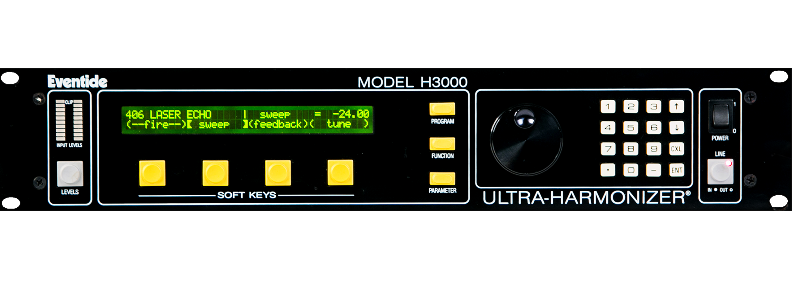

Development Log
June 4, 2025
The Map
Natalie: Today we finished up the map in figma and put that into the home page. It feels more like the final product and it is pretty exciting. Next up if figuring out how to get the buildings into SVGs so that they can have effects when you hover over them. The goal is to make them get bigger and have a slim border around them. I will have to talk to Trevor or Hannah to see what the best way of doing that is. I also want to make the buttons smaller and have a concrete header and footer that is universal across the whole website. This includes the back button, the home button, and the footer at the bottom that has all the different files of the website that you can navigate to. The map was a really big step so that feels good to get out of the way and to get the ball rolling on finalizing things. Talk soon, N
Tonight we finalized the home page map as the structure to navigate the site. One of many overarching goals of ours was to try and emulate the experience of exploring in a human built environment, like a city, in a 2d web space. The map gives the website visitor the opportunity to jump into a random corner of the website with no real context of how they ended up there and work their way out through the different layers of digital media. I’m planning to work on the code of a conveyor belt-like gallery landing page where images are generated from a bank and placed on a self moving page in random order, size and position. This will be the initial location for the “Gallery” button containing subsequent links to the vault and theatre. It feels like we are now on the downhill stretch to completion. -Grady

May 14, 2025
Getting back into the swing of things
Hi everyone, it’s Natalie. Now that I am post-grad I have time to get back into the swing of things. It was nice to get a refresher on where we left off and the things we want to get started with next. The running plan right now is to meet weekly and make a plan for the following weeks so that hopefully we can launch this shit by midsummer. Yuuuuuuupppppppp. Exciting shit. I am excited to get back into coding and figuring stuff out again. It will be good for my brain and good to get things accomplished. I want to finish the map and get the navigation working so that it starts feeling like you can move around the site. I think I’m going to focus on getting the frameworks in there first, and then building out the styling. Talk soon team, Natalie.
Hello, Grady here. Today was a great reset and restart for thinking about this project again. I believe we have some excellent ideas coming down the line. Some of which are a scrolling gallery home page, a statue of the civic engagement logo in the navigation map, and background for the beat composer. Also starting to think about buttons and iconography language for the site; obviously it will be inspired by recording equipment. Eventide H3000 from panel design, button specifically, are so fresh and so clean. Circle inside square. Black and yellow black and yellow. Does anyone know how to code a loading screen??????? I’ve decided to make content surrounding the launch of civic-engagnement.net where we can go into detail about the locations/creative functions of the website and how cool they are. See you next time.

February 23, 2025
Today we decided to move the development log into a master google docs for our project to easily give updates.
Hi team, Natalie here. Today I reworked the nav bar into a polished, more awesome version. Also did the discography page into an image grid with the titles and artist names. Soon we are going to add the icons to link to the artists’ personal pages. I have overall more styling to do kinda everywhere but having the nav bar be functional and clean makes it a lot easier to understand. Grady wrote the first article today so I put that into the articles page. It was a lot of fun to style different texts, like with the < em > tag and the < ul > tag and < il > tags. It’s a lot easier when you have the content already. That is the way to web design. It makes it so much swifter. Making everything responsive to different media sizes is always a tricky part but an important one nonetheless. A lot was accomplished today! Yay February!
I am Grady. Today I made an attempt to edit code for a scrolling page of images to become the landing page for the gallery tab. Using java script for moving and interactive elements is something that still confuses me greatly. Needless to say, I was not successful, so I will need to ask Natalie for help to accomplish this.
July 9, 2024
Today I got the audios on the home page to play in sync!
This was a huge hurdle for bc it is written in JavaScript and I am only a baby developer.
I knew that I had to use an audio API and with enough fidgeting I finally got it to behave how we wanted it to.

I also got the image map to work which is gonna be so awesome.
I’m very delighted with the progress made today! Thank you adderall!
May 25, 2024
So far after a couple of preliminary meetings and brainstorming, this is what the site looks like in its first stages: